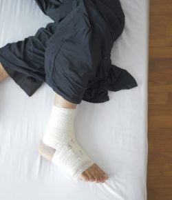
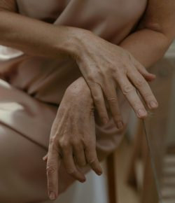
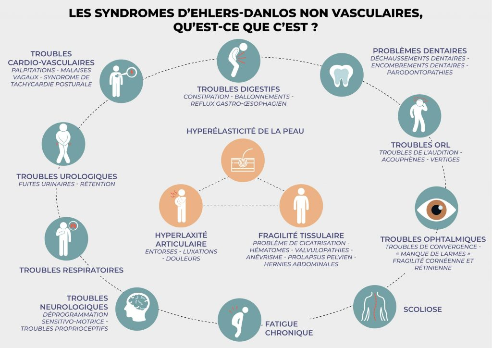

Qu'est-ce que le syndrome d'Ehlers-Danlos (SED) ?
Le syndrome d'Ehlers-Danlos (SED) regroupe un ensemble de maladies rares d'origine génétique. Ces maladies affectent le tissu conjonctif, un tissu essentiel qui soutient, protège et relie les différentes structures du corps (peau, os, vaisseaux, organes, etc.).
Chez les personnes atteintes de SED, ce tissu est anormalement fragile ou souple, ce qui entraîne une grande variété de symptômes.
Les signes du SED apparaissent généralement dès l'enfance, mais leur intensité et leur apparition peuvent varier selon le type de SED et sa sévérité. On compte actuellement 15 types différents, chacun ayant ses particularités, complications et traitements spécifiques.
Les principaux symptômes du SED

Hyperlaxité articulaire
Les articulations sont anormalement souples, ce qui peut provoquer des entorses, des luxations, subluxations fréquentes et des douleurs chroniques et invalidantes

Peau fragile et élastique
La peau est souvent très fine, douce et extensible, avec une tendance aux hématomes et une mauvaise et longue cicatrisation (cicatrices fines, larges ou atrophiques)
Douleurs chroniques et fatigue
Les douleurs peuvent toucher toutes les articulations, les tendons, les ligaments, les muscles, le dos, le thorax, l'abdomen et provoquer des céphalées (maux de tête). La fatigue est chronique, souvent intense, durable et présente dès le réveil
Troubles de la proprioception
Les personnes atteintes peuvent avoir du mal à percevoir la position de leur corps dans l'espace, ce qui entraîne : des vertiges, des troubles de l'équilibre, des troubles visuels
Un diagnostic essentiel pour une meilleure prise en charge
Le diagnostic repose sur :
- Un examen clinique approfondi (se référer au PNDS sur le site de l'HAS).
- Une étude des antécédents familiaux.
- Parfois un test génétique (sauf pour le type hypermobile, dont la cause génétique est en cours d'identification)
